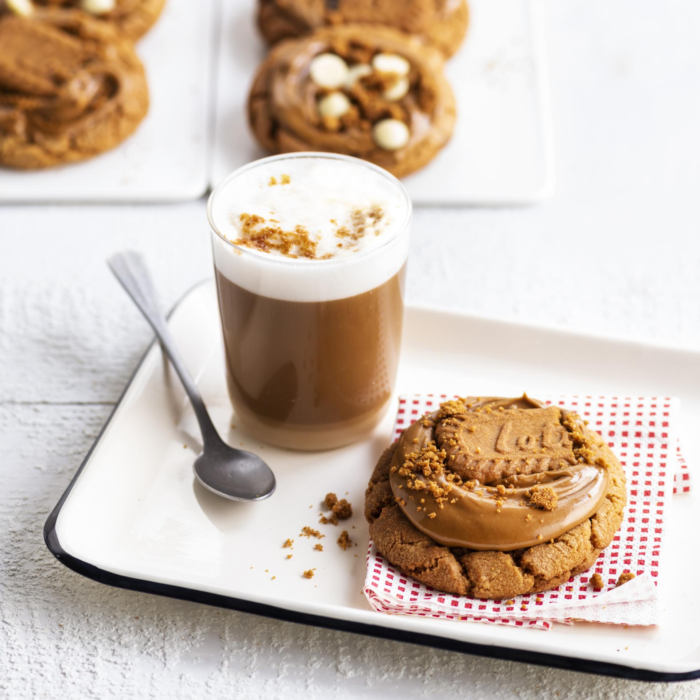

Lotus cookies

A BISCOFF COOKIE IS ALWAYS A GREAT TREAT, BUT A FRESHLY BAKED GOOEY COOKIE LOADED WITH BISCOFF SPREAD AND FINISHED OFF WITH A BISCOFF COOKIE IS BRINGING IT TO THE NEXT LEVEL
Ingredients
For 15 servings
- 280 g all-purpose flour
- ½ tsp baking soda
- 1 tsp baking powder
- ½ tsp kosher salt
- 110 g unsalted butter, room temperature
- 180 g Biscoff spread
- 200 g brown sugar
- 105 g sugar
- 1 egg + 1 egg yolk
Preparation
- Preheat the oven to 175°C (350°F). Line a baking tray with parchment paper.
- Mix all the dry ingredients. Combine all-purpose flour, baking soda, baking powder, and salt in a bowl. Mix together and set aside.
- Mix the butter and Biscoff spread until the mixture has a homogenous colour.
- Then add brown and white sugar and continue to mix for another 3 minutes.
- Add the eggs and mix until fully combined. Scrape down the sides of the bowl as needed.
- Fold the dry ingredients carefully into the wet ingredients with spatula. Be careful not to overmix.
- Use an ice cream scoop to make the cookies, one big scoop per cookie. Roll into balls and place on the prepared baking sheet.
- Bake for 12-14 minutes, until crispy edges begin to form. It’s better to underbake cookies than to overcook them.
- Take out of the oven and let cool for some minutes. Put on a rack to cool off completely.
- Once cooled off, spoon about 1 tbsp of the Biscoff spread on top of the baked biscuits. (If Biscoff is stiff, microwave for about 30 seconds until melted). Add Biscoff cookie crumbs and a Biscoff biscuit on top.